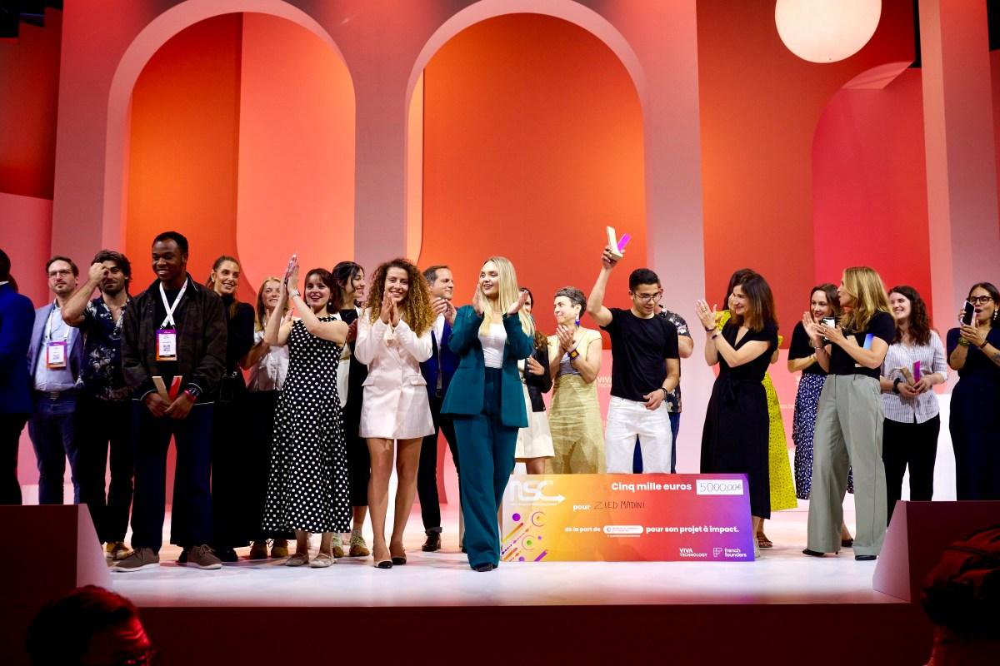

Opening
今年沒去巴黎，但還是想把現場的靈感帶回來
每年看到 VivaTech，總會有一種很特別的感覺。它不像只是單純在展示新技術，更像把創業、設計、品牌、城市與生活方式，一起搬上同一個舞台。你可以說它是一場科技展，但某些時候，它又更像一場未來生活的時尚秀。
今年沒有親自走進巴黎現場，確實有點可惜。不過也因為這樣，我們反而換了一種方式重新看這場展會，從官網主題、法國新創和展會釋出的訊號裡，把那些真正值得留下來的亮點慢慢挑出來。不是追逐哪個題目最熱，而是想看看，哪些想法真的正在靠近日常生活。
Scene Setting
VivaTech 為什麼總像一場科技界的時尚秀

VivaTech 2026 於 2026 年 6 月 17 日至 6 月 20 日在巴黎 Expo Porte de Versailles 舉行。官方把它定位成歐洲最具代表性的 startup 與 tech event 之一，但它最迷人的地方，其實不只是規模，而是它看待科技的方式。
如果說有些科技展像是在比規格、比速度、比誰先做出更新的硬體，那 VivaTech 比較像是在問另一個問題：這些技術最後會如何進入我們的生活？它關心的不只是技術夠不夠厲害，也在乎品牌怎麼說故事、城市怎麼吸收創新、創業團隊怎麼把一個抽象概念變成可以被感受的體驗。
這也是它總帶著一點巴黎式氣質的原因。科技在這裡不只被當作工程成果展示，而像是一種新的生活提案。從舞台主題、展區策展到新創名單，你會感覺到一種很強烈的訊號：未來不只是更有效率，也會更講究語氣、美感與價值觀。
Key Signals
今年的 5 個關鍵字，不只是趨勢，更像生活提案
Artificial Intelligence：AI 終於從話題走向實用
AI 當然仍然是今年最核心的主題之一，但和前兩年那種「每個人都在談模型」的氛圍相比，今年更有一種往下落地的感覺。討論的重點不再只是誰更大、誰更快、誰更強，而是誰能把 AI 變成真正好用的工具。
當一項技術開始從舞台中央走進工作流程、客服系統、影像製作、品牌內容甚至個人日常，它才真的有可能留得下來。AI 已經不只是用來驚豔大家，而是被期待去節省時間、改善判斷、降低門檻，甚至重新分配創作與工作的方式。
Sovereignty & Ethics：技術愈強，誰來定規則就愈重要
今年另一個很有歐洲感的主題，是 Sovereignty & Ethics。這個關鍵字聽起來不像最吸睛，卻可能是最重要的一條主線。當 AI、資料、雲端服務和平台能力逐漸集中，真正值得追問的問題不只是創新速度，而是主導權掌握在誰手上。
誰能控制關鍵模型、誰能保有資料治理能力、誰能在全球平台之間仍然留下自己的規則與選擇，這些議題已經不只是政策圈的討論，而是會直接影響未來產業佈局與使用者信任的關鍵。
GreenTech, Energy & Mobility：永續不是口號，而是更順的城市生活
如果只把永續想成節能標語，會低估今年這個主題的吸引力。它更像是在討論一座城市如何重新安排自己的節奏。從能源使用到移動方式，再到交通工具如何被重新設計，背後想問的是：我們能不能過一種更有效率、也更輕盈的生活？
當更乾淨的能源、更聰明的交通系統、或更容易被接受的二手循環方案被整合在一起，永續才不會只是理念，而是變成你願不願意使用的日常選擇。
Health & Longevity：科技開始更直接地介入我們的身體與時間
Health & Longevity 的吸引力不在於未來感的醫療想像，而是在於它正慢慢把科技從「出問題才用」的工具，變成平常就持續陪伴的系統。從健康監測、數據分析，到更精準的照護與生活管理，這個方向代表的不是單一產品，而是一種新的生活觀。
人們會開始期待，科技不只是幫忙治療，而是幫忙更早發現問題、更長期維持狀態，甚至讓長壽這件事不只是活得久，而是活得更有品質。
Creative Industries：當工具變強，美感與判斷反而更珍貴
生成式工具已經快速改變內容製作流程，從圖像到文案、從影片到視覺整理，很多原本高門檻的工作，現在都變得更容易啟動。但真正有趣的地方，反而不是工具能做多少，而是人還要決定什麼。
當每個人都能更快產出內容，美感、風格、品牌語氣與編輯判斷就變得更重要。未來的創意工作，也許不是被技術取代，而是更需要懂得如何和技術一起工作。
French Names To Know
幾個你會想記住的法國新創名字

Mistral AI
最能代表法國 AI 氣勢的名字之一。它不只是技術公司，也像一個象徵，代表法國和歐洲正在努力建立自己的 AI 話語權。
Photoroom
把複雜影像工作變得非常直覺，讓品牌、小型商家與創作者都能更快完成內容製作。
Pigment
聚焦企業規劃與決策效率，證明真正改變工作現場的創新，未必都來自最華麗的題目。
Pennylane
把財務管理重新設計成更順手的數位體驗，讓營運節奏更清楚、摩擦更少。
La Vie
把飲食創新、永續消費與生活方式綁在一起，是很典型的法國式品牌敘事。
Upway
將二手電輔車重新整理、定價與包裝，讓循環經濟變成更具吸引力的城市移動方案。
Taiwan View
從巴黎看回台灣，哪些訊號最值得繼續追
如果要用一句話來總結 VivaTech 2026，今年最值得注意的，不是哪一項科技最炫，而是哪一種科技最有機會真的留下來。留下來的東西，往往不是聲量最大的，而是那些能默默融入工作流程、生活習慣、品牌語言與城市節奏的創新。
對台灣讀者來說，接下來特別值得追的，是 AI 工具如何從展示走向日常、歐洲如何持續思考科技主權與資料治理，以及永續、健康與創意產業如何被重新設計成更有吸引力的生活提案。